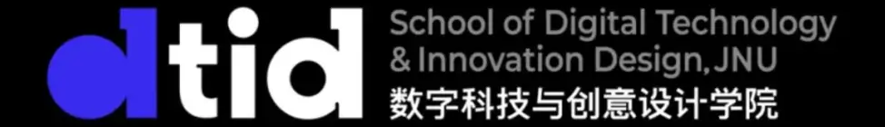

Welcome to the Wearables & Embodied AI Group (WEAI)'s website. WEAI is led by Prof. XXX at XXX University.
Our mission is to explore the intersection of wearable computing and embodied artificial intelligence — building intelligent systems that sense, understand, and interact with the physical world.


Wearables & Embodied AI Group (WEAI)
XXX University
Copyright © 2026
Website based on Colorlib